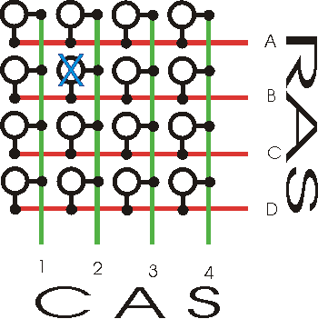

In oudere computers werd meestal asynchronous DRAM gebruikt. De naam van dit type RAM geheugen verwijst naar het feit dat het geheugen niet gesynchroniseerd is met de klok van de bus waarover bits getransporteerd worden van en naar de processor.
In moederborden voor 2011 was de kloksnelheid van het geheugen gesynchroniseerd met de kloksnelheid van de Front Side Bus. Na 2011 werd de FSB afgeschaft. De geheugencontroller verhuisde naar de processor zelf, zodat die het werkgeheugen rechtstreeks over zijn eigen geheugenkanalen aanspreekt, en voor de rest van het systeem kwamen point to point verbindingen in de plaats. Intel gebruikt daarvoor bijvoorbeeld QuickPath Interconnect en AMD HyperTransport.
Het principe is echter hetzelfde: iedere klokpuls worden bits over een bus getransporteerd tussen processor en werkgeheugen. Hoeveel bits worden getransporteerd is dus afhankelijk van:
Bits opgeslagen in SDRAM worden geordend in een matrix patroon met rijen en kolommen. De data die wordt opgeslagen in SDRAM kan je zien als blokken die een aantal bits breed zijn, gedefinieerd door de coördinaten van de rij en kolom.

Als je geheugen wil uitlezen of er data naartoe wil schrijven moet je telkens een rij en kolomadres meegeven.
Het adresseren van de rij of row access strobe neemt het meest tijd in beslag. De column access strobe of het adresseren van de kolom neemt veel minder tijd in beslag.
Omdat geheugen vaak sequentieel wordt gelezen (dezelfde rij, aanliggende kolommen) wordt er in moderne geheugens een zogenaamde prefetch buffer gebruikt om de adressering sneller te maken.
Met sequentieel uitlezen bedoelen we eigenlijk dat de processor heel vaak de aanliggende geheugenblokken ook nodig heeft en deze dus uiteindelijk ook zal opvragen.
De prefetch buffer is een cache geheugen op de RAM module. Als er na het adresseren aanliggende data uitgelezen moet worden, dan moeten we niet de data opvragen uit het RAM geheugen (en adresseren) maar kunnen we dit zeer snel uit de prefetch buffer halen.
Een prefetch buffer is dus eigenlijk een simpel trucje om de doorvoersnelheid van RAM geheugen op te krikken. Het werkt echter enkel maar als de aanliggende geheugenblokken ook effectief moeten worden opgevraagd. Indien dat niet zo is, dan heeft een prefetch buffer geen effect.
Maar... ook op het niveau van RAM geheugen kan er fragmentering ontstaan. Dit betekent dat niet alle data die logisch bij elkaar hoort zich ook fysisch naast elkaar bevindt in het RAM geheugen. Wanneer er fragmentering in het RAM ontstaat dan heeft de prefetch buffer uiteraard weinig zin. De aanliggende opgevraagde data is dan immers niet relevant.